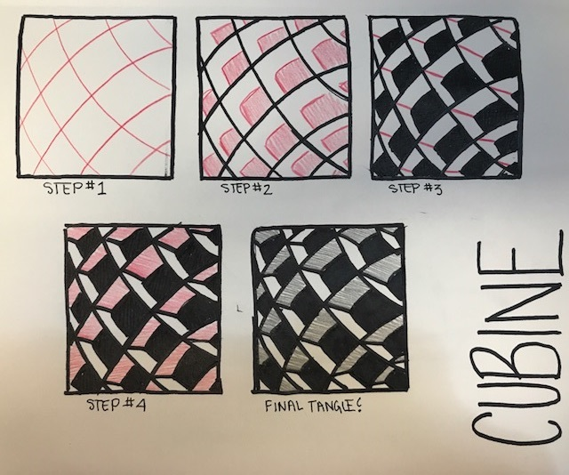
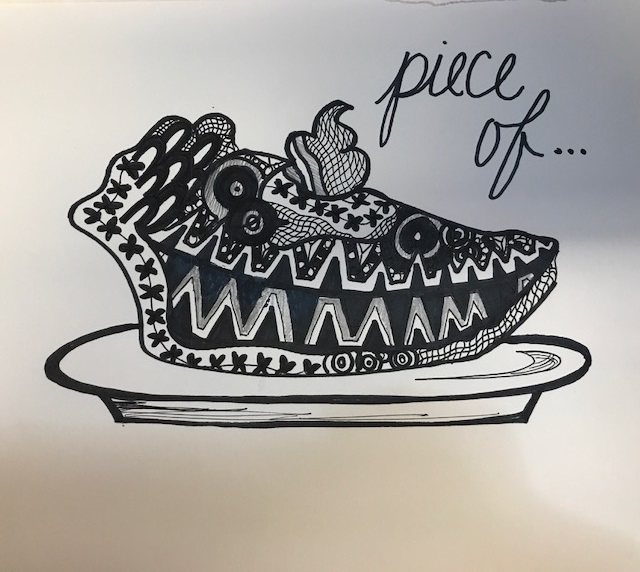

Although there are a lot of fun zentangle tools out there,
when first starting out, it's a good idea to keep things simple.
Let's start with just three essentials, which I will list below.
| Tool Needed | Description |
|---|---|
| pencil | any #2 HB pencil (without an eraser!) |
| black pen | 0.25mm tip, non-bleeding |
| zentangle tile | 89mm square of fine Italian paper |
Today, we are going to study a tangle called the Cubine.
This is a relatively new tangle made by the duo, Ricker Roberts
and Maria Thomas. The reason it is called the Cubine relates
back to the fact that the design looks like a whole bunch of
sugar cubes stacked one on top of the other.
. . . Now that we know a little bit of our tangle's history,
let's jump right in and start drawing!
NOTE: Since tangles have the tendency to be confusing to
explain with all the lines, swirls and curves, an illustation is
the method of choice when describing the steps for
how to do a certain tangle.
Look closely at the image below. . .
You should see some black portions and some red portions.
Black portions are lines, swirls and/or curves the artist has
already drawn in a previous step. Anything in red is something
new that the artist will have to draw to produce the given tangle.

How does your first tangle look?
Remember, your design does not have to look exactly like the
original tangle! As Beckah Krahula states in a quote,
There are no mistakes in Zentangle. . .
A Zentangle . . . is meant to be a surprise
that unfolds before the creator's eyes,
one stroke at a time.
Easy, right?
